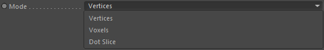
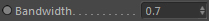
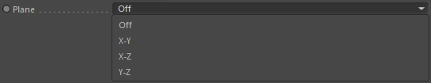
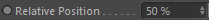
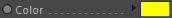
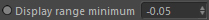
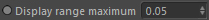

Display
Display

On
This activates or deactivates the volumes viewport display.
Mode

Here you can choose between different display modes.
Vertices: Volume grid cells are drawn as colored vertices.
Voxels: Volume grid cells are directly outlined.
Dot Slice: Volume grid cells are displayed on a 2D slice.
It is always good advise to check which grid cells are really covered by the volume to make
sure the simulation indeed sees the volume (and what it sees of it) with the current voxel size.
Bandwidth

Defines the width of the band of grid cells near the volume surface shown in the viewport.
A value of 1.0 is the width of a voxel.
This value is only used in Vertices or Voxels Mode.
Plane

This value is only used in 'Dot Slice' display mode and
lets you choose the display plane for the 2D slice.
If set to 'Off' nothing is drawn (obsolete...use the On checkbox)
Relative Position

This value is only used in 'Dot Slice' display mode
and defines the relative position inside the volume bounding box (grid).
Color

The volume display color.
Display range minimum

This value is only used in 'Dot Slice' display mode
and defines which inner volume cells are displayed.
While this is the distance to these cells from the surface
given in voxels.
Display range maximum

This value is only used in 'Dot Slice' display mode
and defines which outer volume cells are displayed.
While this is the distance to these cells from the surface
given in voxels.
Auto Transparency

This value is only used in 'Dot Slice' display mode.
Automatically display the voxels transparently
based on their distance to the surface.